Part 4 · Highway Traffic Signals · Chapter 4F
Steady (Stop-and-Go) Operation of Traffic Control Signals
The largest chapter in Part 4: the complete rulebook for how every steady red, yellow, and green circular and arrow indication may be sequenced and combined for left-turn, right-turn, and through movements, plus yellow change/red clearance timing and preemption/priority control. (Source title on the chapter's title page is abbreviated "Steady (Stop-and-Go) Operation of Traffic Control Signals" — confirmed from the chapter's own heading text.)
4F.01Application of Steady and Flashing Signal Indications during Steady (Stop-and-Go) Operation
- 01When a traffic control signal is being operated in a steady (stop-and-go) mode, at least one indication in each signal face shall be displayed at any given time.
- 02A signal face(s) that controls a particular vehicular movement during any interval of a cycle shall control that same movement during all intervals of the cycle.
- 03Steady and flashing signal indications shall be applied as follows:
A. A steady CIRCULAR RED signal indication — 1. shall be displayed when intended to prohibit traffic, except pedestrians directed by a pedestrian signal head, from entering the intersection or other controlled area (turning after stopping is permitted per Item C.1, Paragraph 1, Section 4A.03); 2. shall be displayed with the appropriate GREEN ARROW signal indications when intended to permit a specified turn(s) while prohibiting proceeding straight ahead, except in protected-only mode (Sections 4F.06, 4F.13) or protected/permissive mode with separate turn signal faces (Sections 4F.08, 4F.15).
B. A steady CIRCULAR YELLOW signal indication — 1. shall be displayed following a CIRCULAR GREEN or straight-through GREEN ARROW in the same signal face; 2. shall not be displayed in conjunction with the change from CIRCULAR RED to CIRCULAR GREEN; 3. shall be followed by a CIRCULAR RED signal indication, except that when entering preemption operation, return to the previous CIRCULAR GREEN is permitted following a steady CIRCULAR YELLOW (see Section 4F.19); 4. shall not be displayed to an approach from which drivers are turning left, or making a U-turn left, permissively using a shared signal face, unless (a) a steady CIRCULAR YELLOW is also simultaneously displayed to the opposing approach, (b) an engineering study determines unique intersection conditions make (a) impractical without significant operational/safety problems and impacted turning volume is relatively low, with drivers advised — where the condition is continuous — by a W25-1 sign reading ONCOMING TRAFFIC HAS EXTENDED GREEN (the W25-1 sign shall not be used in California), or (c) drivers are advised, where the condition occurs only occasionally (such as during a preemption sequence), by a W25-2 sign reading ONCOMING TRAFFIC MAY HAVE EXTENDED GREEN (the W25-2 sign shall not be used in California).
C. A steady CIRCULAR GREEN signal indication shall be displayed only when intended to permit traffic to proceed in any lawful and practical direction.
D. A steady RED ARROW signal indication shall be displayed when intended to prohibit traffic, except pedestrians directed by a pedestrian signal head, from entering the intersection to make the indicated turn; except as described in Item C.2, Paragraph 1, Section 4A.03, turning on a steady RED ARROW shall not be permitted.
E. A flashing RED ARROW signal indication shall be displayed as part of steady (stop-and-go) mode only when intended to permit traffic, after coming to a full stop, to cautiously enter the intersection to make a turn in the indicated direction after yielding to pedestrians and/or opposing traffic, if any.
F. A steady YELLOW ARROW signal indication — 1. shall be displayed in the same direction as a GREEN ARROW following that GREEN ARROW in the same signal face, unless (a) the GREEN ARROW and a CIRCULAR GREEN (or straight-through GREEN ARROW) terminate simultaneously in the same signal face, or (b) the green arrow is itself a straight-through GREEN ARROW; 2. shall be displayed in the same direction as a flashing YELLOW ARROW or flashing RED ARROW following that flashing indication in the same signal face, when the flashing indication is displayed as part of steady mode operation, if the face will subsequently display a steady red; 3. shall not be displayed in conjunction with the change from a steady RED ARROW, flashing RED ARROW, or flashing YELLOW ARROW to a GREEN ARROW, except when entering preemption operation per Item F.5(a); 4. shall not be displayed when any conflicting vehicular movement has a green or yellow signal indication (except the U-turn-left situation in Paragraph 4) or any conflicting pedestrian movement has WALK or flashing DON'T WALK, except that a steady left-turn (or U-turn-left) YELLOW ARROW used to terminate a flashing left-turn (or U-turn-left) YELLOW or RED ARROW controlling a permissive left-turn (or U-turn-left) movement per Sections 4F.04 and 4F.08 is permitted when a CIRCULAR YELLOW is displayed for the opposing through movement — vehicles departing in the same direction are not considered in conflict if each turn lane with moving traffic has a separate departure lane with pavement markings or raised channelization clearly indicating which to use; 5. shall not be displayed to terminate a flashing arrow on an approach with permissive left turns or U-turns left unless (a) a steady CIRCULAR YELLOW or CIRCULAR RED is simultaneously displayed to the opposing approach, (b) the engineering-study/W25-1-sign condition described above applies (W25-1 not used in California), or (c) the occasional-occurrence/W25-2-sign condition applies (W25-2 not used in California); 6. shall be terminated by a RED ARROW for the same direction or a CIRCULAR RED, except (a) when entering preemption, a GREEN ARROW or flashing arrow indication may follow a steady YELLOW ARROW, and (b) when the arrow movement continues on a permissive basis in the immediately following phase, a CIRCULAR GREEN or flashing YELLOW ARROW may follow a steady YELLOW ARROW — a steady left-turn RED ARROW may be displayed immediately after the steady left-turn YELLOW ARROW to provide a red clearance interval.
G. A flashing YELLOW ARROW signal indication shall be displayed as part of steady (stop-and-go) mode only when intended to permit traffic to cautiously enter the intersection to make a turn in the indicated direction after yielding to pedestrians and/or opposing traffic, if any.
H. A steady GREEN ARROW signal indication — 1. shall be displayed only to allow vehicular movements, in the indicated direction, that are not in conflict with other vehicles moving on a green or yellow signal indication (except the U-turn situation in Paragraph 4 and straight-through GREEN ARROWs in Paragraph 5), even if those other vehicles must yield right-of-way, and that are not in conflict with pedestrians crossing on WALK or flashing DON'T WALK — vehicles departing in the same direction are not in conflict if each turn lane with moving traffic has a separate departure lane with clear markings/channelization; 2. shall be displayed on a signal face controlling a left-turn movement when that movement is not in conflict with other green/yellow vehicles (except the U-turn situation in Paragraph 4/4a) and not in conflict with WALK/flashing-DON'T-WALK pedestrians, subject to the same departure-lane exception; 3. shall not be required on the stem of a T-intersection or for turns from a one-way street.
- 04If U-turns are permitted from the approach and a right-turn GREEN ARROW is simultaneously displayed to road users making a right turn from the conflicting approach to the left, road users making a U-turn may be advised of the operation by a U-TURN YIELD TO RIGHT TURN (R10-16) sign (see Section 2B.59).
- 04aWhen a RIGHT TURN ARROW controls the right-turn movement, a conflicting U-turn approach shall be prohibited.
- 05A steady straight-through GREEN ARROW signal indication may be used instead of a CIRCULAR GREEN signal indication in a signal face to discourage wrong-way turns, even if opposed by a simultaneous permissive left-turn movement, under the following conditions: (A) on an approach intersecting a one-way street; (B) on an approach intersecting an interchange exit ramp; (C) on an approach with unique geometric design that prohibits turns; or (D) on an approach with pre-signals and adjacent lanes controlled separately (see Sections 8D.11 and 8D.12).
- 06If not otherwise prohibited, steady red, yellow, and green turn arrow signal indications may be used instead of steady circular red, yellow, and green signal indications in a signal face on an approach where all traffic is required to turn or where the straight-through movement is not physically possible.
- 07Section 4F.16 contains information regarding the signalization of approaches with a combined left-turn/right-turn lane and no through movement.
- 08Section 4D.07 contains information regarding limitations on left-turn arrows, right-turn arrows, and U-turn arrows in supplemental signal faces.
- 09A straight-through RED ARROW signal indication or a straight-through YELLOW ARROW signal indication shall not be displayed on any signal face, either alone or in combination with any other signal indication.
- 10The following combinations of signal indications shall not be simultaneously displayed on any one signal face: A. CIRCULAR YELLOW with CIRCULAR RED; B. CIRCULAR GREEN with CIRCULAR RED; or C. straight-through GREEN ARROW with CIRCULAR RED.
- 11Except as provided in Paragraph 13, the combinations in Paragraph 10 shall not be simultaneously displayed on an approach as a result of the combination of displays from multiple signal faces, unless the display is created by a signal face(s) devoted exclusively to the control of a right-turn movement and: A. that signal face(s) is visibility limited from the adjacent through movement or positioned to minimize potential confusion to approaching road users, or B. a RIGHT TURN SIGNAL (R10-10) sign (see Sections 4F.09, 4F.11, 4F.13, and 4F.15) is mounted adjacent to the signal face(s) controlling the right-turn movement.
- 12Except as provided in Paragraph 13, the following combinations of signal indications shall not be simultaneously displayed on any one signal face or as a result of the combination of displays from multiple signal faces on an approach: A. CIRCULAR GREEN with CIRCULAR YELLOW; B. straight-through GREEN ARROW with CIRCULAR YELLOW; C. GREEN ARROW with YELLOW ARROW pointing in the same direction; D. YELLOW ARROW with RED ARROW pointing in the same direction; or E. GREEN ARROW with RED ARROW pointing in the same direction.
- 13If a separate signal face is provided at a pre-signal (see Section 8D.11) or at a queue cutter signal (see Section 8D.12) for a left-turn and/or right-turn lane that extends from the downstream signalized intersection back to and across a grade crossing, the following combinations shall be permitted to be simultaneously displayed as a result of the combination of displays from multiple signal faces at the pre-signal or queue cutter signal: A. straight-through GREEN ARROW with CIRCULAR RED; B. straight-through GREEN ARROW with CIRCULAR YELLOW; and C. CIRCULAR YELLOW with CIRCULAR RED.
- 14Except as otherwise provided in Sections 4F.08, 4F.15, 4J.03, and 4N.03, the same signal section shall not be used to display both a flashing and a steady yellow indication during steady mode operation. Except as otherwise provided in Sections 4F.04, 4F.08, 4F.11, and 4F.13, the same signal section shall not be used to display both a flashing and a steady red indication during steady mode operation.
- 15No movement that creates an unexpected crossing of pathways of moving vehicles or pedestrians should be allowed during any green or yellow interval, except when all three of the following conditions are met: A. the movement involves only slight conflict; B. serious traffic delays are substantially reduced by permitting the conflicting movement; and C. drivers and pedestrians subjected to the unexpected conflict are effectively warned by a sign.
4F.02Signal Indications for Left-Turn Movements — General
- 01In Sections 4F.03 through 4F.08, provisions applicable to left-turn movements and left-turn lanes are also applicable to signal indications for U-turns to the left that are provided at locations where left turns are prohibited or not geometrically possible.
- 02Left-turning traffic is controlled by one of four modes: A. Permissive Only Mode — turns made on a CIRCULAR GREEN, a flashing left-turn YELLOW ARROW, or a flashing left-turn RED ARROW after yielding to pedestrians and/or opposing traffic, if any; B. Protected Only Mode — turns made only when a left-turn GREEN ARROW is displayed; C. Protected/Permissive Mode — both modes occur on an approach during the same cycle; D. Variable Left-Turn Mode — the operating mode changes among protected only, protected/permissive, and/or permissive only during different periods of the day or as traffic conditions change.
- 03In areas having a high percentage of older drivers, special consideration may be given to the use of protected only mode left-turn phasing, when appropriate.
- 04During a permissive left-turn movement, the signal faces for through traffic on the opposing approach shall simultaneously display green or steady yellow signal indications. If pedestrians crossing the lane(s) used by the permissive left-turn movement to depart the intersection are controlled by pedestrian signal heads, those signal heads' displays shall not be limited to any particular display during the permissive left-turn movement.
- 05During a protected left-turn movement, the signal faces for through traffic on the opposing approach shall simultaneously display steady CIRCULAR RED signal indications. During a protected left-turn movement, a GREEN ARROW or YELLOW ARROW signal indication shall not simultaneously be displayed to right-turning traffic on the opposing approach, except where a separate departure lane is available for each left-turn and right-turn lane with moving traffic and markings/channelization clearly indicate which departure lane to use (see Item H.1, Paragraph 3, Section 4F.01). If pedestrians crossing the lane(s) used by the protected left-turn movement to depart the intersection are controlled by pedestrian signal heads, those heads shall display a steady UPRAISED HAND (DON'T WALK) signal indication during the protected left-turn movement.
- 06If a combined left-turn/through lane exists on an approach, a left-turn GREEN ARROW, left-turn YELLOW ARROW, or flashing left-turn RED ARROW signal indication shall not be displayed to the approach simultaneously with a CIRCULAR RED for the through movement, and a left-turn RED ARROW signal indication shall not be displayed simultaneously with a CIRCULAR GREEN or CIRCULAR YELLOW for the through movement.
- 07A yellow change interval for the left-turn movement shall not be displayed when the status of the left-turn operation is changing from permissive to protected within any given signal sequence.
- 08If the operating mode changes among protected only, protected/permissive, and/or permissive only during different periods of the day or as traffic conditions change, the requirements in Sections 4F.03 through 4F.08 appropriate to that mode of operation shall be met, subject to: A. the CIRCULAR GREEN and CIRCULAR YELLOW signal indications shall not be displayed when operating in the protected only mode; B. the left-turn GREEN ARROW and left-turn YELLOW ARROW signal indications shall not be displayed when operating in the permissive only mode.
- 09When variable left-turn mode phasing is used for an approach with a combined left-turn/straight-through lane and a flashing yellow arrow is used as the permissive turn display, a five-section shared left-turn signal face containing both circular and arrow indications may be used in combination with one or more separate left-turn signal faces for the mandatory left-turn lane(s), if any, on the same approach. The steady left-turn YELLOW ARROW and the flashing left-turn YELLOW ARROW may be displayed in the same section of the five-section shared left-turn signal face.
- 10Additional static signs or changeable message signs may be used to meet the requirements for the variable left-turn mode or to inform drivers that left-turn green arrows will not be available during certain times of the day.
- 11Sections 4F.03 through 4F.08 describe two types of signal faces for controlling left-turn movements: A. Shared signal face — controls both the left-turn movement and the adjacent (usually through) movement, and can serve as one of the two required primary signal faces for the adjacent movement; it always displays the same color of circular indication as the adjacent through signal face(s). If mounted overhead for an approach with a mandatory left-turn lane, it is usually positioned over or slightly right of the extension of the lane line separating the left-turn lane from the adjacent lane; without a mandatory left-turn lane, it is usually positioned over the center of the combined left-turn/straight-through lane. B. Separate left-turn signal face — controls only the left-turn movement and cannot serve as a required primary signal face for the adjacent movement because it displays indications applicable only to the left turn; used only where a mandatory left-turn lane(s) exists, positioned over the extension of that lane if mounted overhead; a flashing left-turn YELLOW ARROW or flashing left-turn RED ARROW is used to control permissive left-turn movements in this type of face.
- 12Section 4D.07 contains provisions regarding the lateral positioning of signal faces that control left-turn movements.
- 13It is not necessary that the same mode of left-turn operation or same type of left-turn signal face be used on every approach to a signalized location — selecting different modes and types for various approaches to the same location is acceptable.
- 14A signal face that is shared by left-turning and right-turning traffic may be provided for a combined left-turn/right-turn lane on an approach that has no through traffic (see Section 4F.16).
4F.03Signal Indications for Permissive Only Mode Left-Turn Movements in a Shared Signal Face
- 01If a shared signal face is provided for a permissive only mode left turn, it shall meet the following requirements (see Figure 4F-1): A. it shall be capable of displaying steady CIRCULAR RED, steady CIRCULAR YELLOW, and CIRCULAR GREEN — only one indication displayed at any given time; B. during the permissive left-turn movement, a CIRCULAR GREEN signal indication shall be displayed; C. a permissive only shared signal face, regardless of position or the number of adjacent through signal faces, shall always simultaneously display the same color of circular indication as the adjacent through signal face(s); D. if permissive only mode is not the only left-turn mode used for the approach, the signal face shall be the same shared signal face used for protected/permissive mode (see Section 4F.07), except the left-turn GREEN ARROW and left-turn YELLOW ARROW shall not be displayed when operating in the permissive only mode.
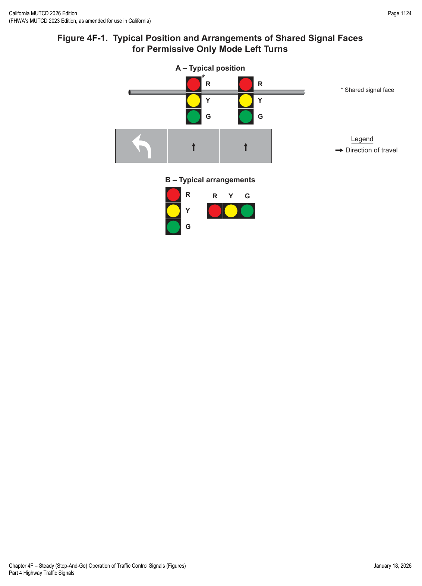
4F.04Signal Indications for Permissive Only Mode Left-Turn Movements in a Separate Signal Face
- 01A separate left-turn signal face shall not be used for an approach that does not include a mandatory left-turn lane.
- 02If a separate left-turn signal face is being operated in a permissive only left-turn mode, a CIRCULAR GREEN signal indication shall not be used in that face.
- 03If a separate left-turn signal face is being operated in a permissive only left-turn mode and a flashing left-turn YELLOW ARROW signal indication is provided, it shall meet the following requirements (see Figure 4F-2): A. it shall be capable of displaying steady left-turn RED ARROW, steady left-turn YELLOW ARROW, and flashing left-turn YELLOW ARROW — only one displayed at any given time; B. during the permissive left-turn movement, a flashing left-turn YELLOW ARROW shall be displayed; C. a steady left-turn YELLOW ARROW shall be displayed following the flashing left-turn YELLOW ARROW; D. it shall be permitted to display a flashing left-turn YELLOW ARROW for a permissive left-turn movement while the adjacent through movement displays steady CIRCULAR RED and the opposing left-turn signal faces display left-turn GREEN ARROW for a protected left-turn movement; E. during steady mode operation, the signal section that displays the steady left-turn YELLOW ARROW during change intervals shall not be used to display the flashing left-turn YELLOW ARROW for permissive left turns, unless a bimodal signal section capable of alternating between steady and flashing YELLOW ARROW is used to operate variable left-turn mode phasing; F. during flashing mode operation (see Section 4G.01), the display of a flashing left-turn YELLOW ARROW shall be only from the signal section that displays a steady left-turn YELLOW ARROW during steady mode operation; G. if permissive only mode is not the only left-turn mode used for the approach, the signal face shall be the same separate left-turn signal face with a flashing YELLOW ARROW that is used for protected/permissive mode (see Section 4F.08), except the left-turn GREEN ARROW shall not be displayed when operating in the permissive only mode.
- 04A separate left-turn signal face with a flashing left-turn RED ARROW signal indication during the permissive left-turn movement may be used for unusual geometric conditions, such as wide medians with offset left-turn lanes, but only when an engineering study determines that each and every vehicle must successively come to a full stop before making a permissive left turn.
- 05If a separate left-turn signal face is being operated in a permissive only left-turn mode and a flashing left-turn RED ARROW signal indication is provided, it shall meet the following requirements (see Figure 4F-3): A. it shall be capable of displaying steady or flashing left-turn RED ARROW, steady left-turn YELLOW ARROW, and left-turn GREEN ARROW — only one displayed at any given time (the GREEN ARROW is required to provide a three-section face but shall not be displayed during the permissive only mode); B. during the permissive left-turn movement, a flashing left-turn RED ARROW shall be displayed, indicating that each and every vehicle must successively come to a full stop before making a permissive left turn; C. a steady left-turn YELLOW ARROW shall be displayed following the flashing left-turn RED ARROW; D. it shall be permitted to display a flashing left-turn RED ARROW for a permissive left-turn movement while the adjacent through movement displays steady CIRCULAR RED and the opposing left-turn signal faces display left-turn GREEN ARROW for a protected left-turn movement; E. a supplementary sign shall not be required — if used, it shall be a LEFT TURN YIELD ON FLASHING RED ARROW AFTER STOP (R10-27) sign (see Section 2B.59).
- 06The requirements of Item A in Paragraph 5 may be met by a vertically-arranged signal face with a horizontal cluster of two left-turn RED ARROW signal indications, the left-most displaying a steady indication and the right-most a flashing indication (see Figure 4F-3).
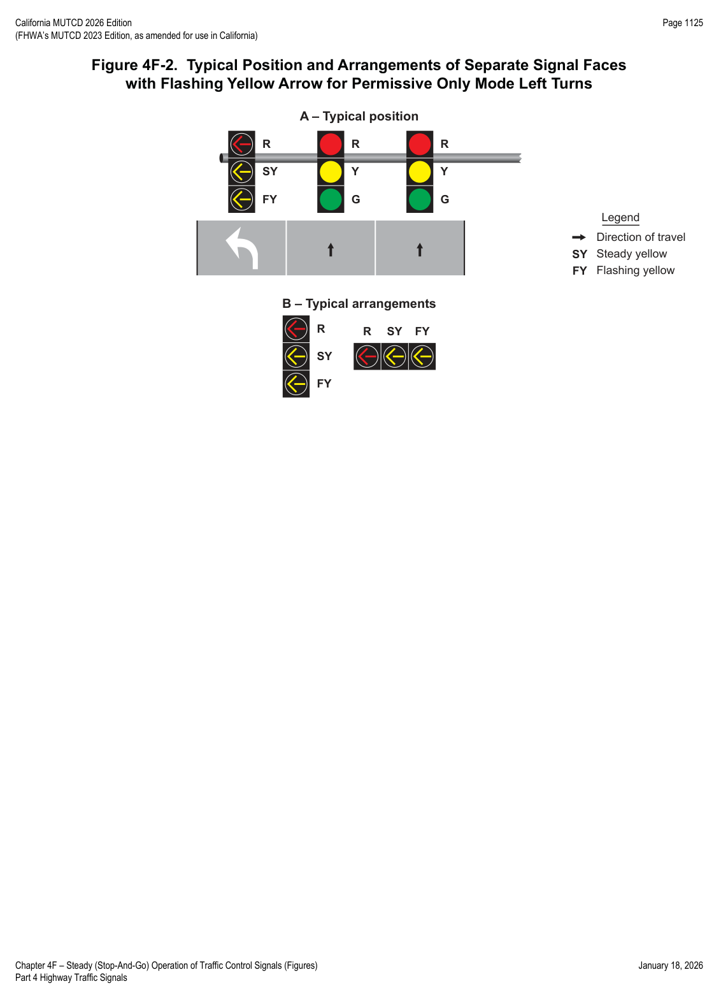
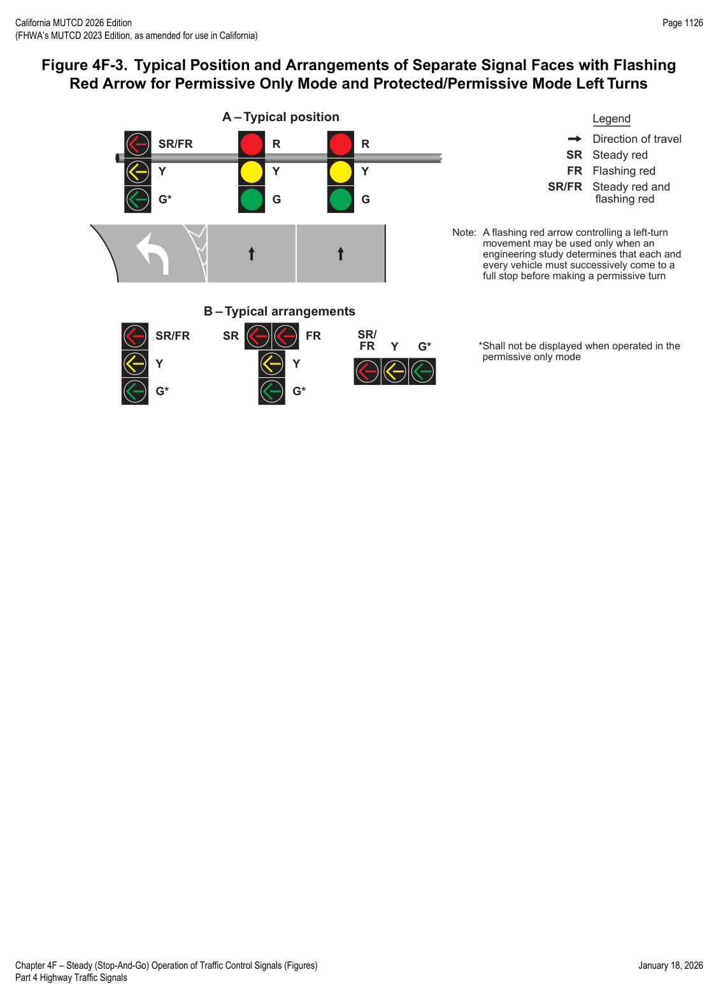
4F.05Signal Indications for Protected Only Mode Left-Turn Movements in a Shared Signal Face
- 01A shared signal face shall not be used for protected only mode left turns unless the CIRCULAR GREEN and left-turn GREEN ARROW signal indications always begin and terminate together. If a shared signal face is provided for a protected only mode left turn, it shall meet the following requirements (see Figure 4F-4): A. it shall be capable of displaying steady CIRCULAR RED, steady CIRCULAR YELLOW, CIRCULAR GREEN, and left-turn GREEN ARROW — only one of the three colors displayed at any given time; B. during the protected left-turn movement, the shared signal face shall simultaneously display both a CIRCULAR GREEN and a left-turn GREEN ARROW; C. the shared signal face shall always simultaneously display the same color of circular indication as the adjacent through signal face(s); D. if protected only mode is not the only left-turn mode used for the approach, the signal face shall be the same shared signal face used for protected/permissive mode (see Section 4F.07).
- 02A straight-through GREEN ARROW signal indication may be used instead of CIRCULAR GREEN in Items A and B of Paragraph 1 on an approach where a straight-through GREEN ARROW is also used instead of CIRCULAR GREEN in the other signal face(s) for through traffic.
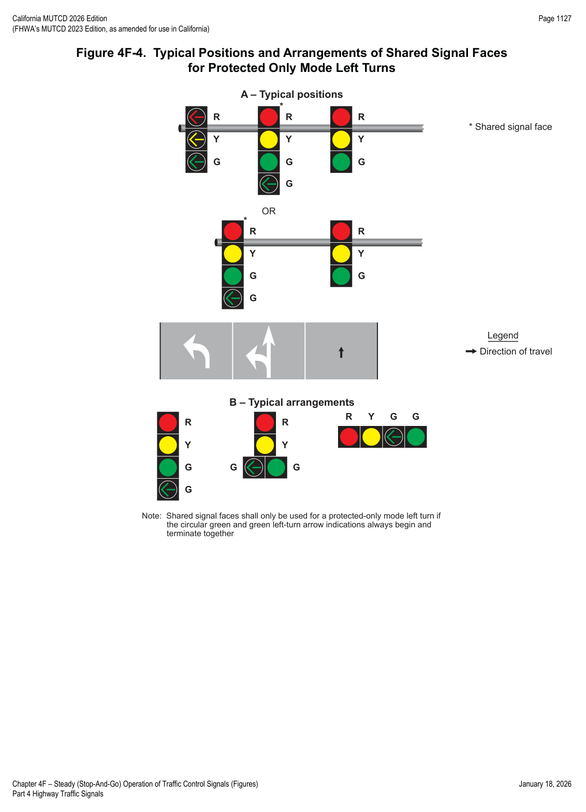
4F.06Signal Indications for Protected Only Mode Left-Turn Movements in a Separate Signal Face
- 01A separate left-turn signal face shall not be used for an approach that does not include a mandatory left-turn lane.
- 02If a separate left-turn signal face is provided for a protected only mode left turn, it shall meet the following requirements (see Figure 4F-5): A. it shall be capable of displaying steady left-turn RED ARROW, steady left-turn YELLOW ARROW, and left-turn GREEN ARROW — only one displayed at any given time; B. during the protected left-turn movement, a left-turn GREEN ARROW shall be displayed; C. a steady left-turn YELLOW ARROW shall be displayed following the left-turn GREEN ARROW; D. if protected only mode is not the only left-turn mode used for the approach, the signal face shall be the same separate left-turn signal face used for protected/permissive mode (see Section 4F.08 and Figures 4F-3 and 4F-7), except the flashing left-turn YELLOW ARROW or flashing left-turn RED ARROW shall not be displayed when operating in the protected only mode.
- 03Since separate signal phases for protected left turns will reduce the green time available for other phases, alternate means of handling left-turn conflicts should be considered first.
- 04The most likely alternatives: 1. Prohibition of left turns — feasible only with convenient alternate means, such as a series of turns around a block, or making the left turn at an adjacent unsignalized intersection during gaps in opposing traffic. 2. Geometric changes to eliminate the left turn — such as a complete separation or full/partial "clover leaf" at grade, at additional cost and right-of-way. 3. Protected-permissive or permissive-protected left-turn operation — the protected interval may be omitted during certain periods to increase green time available for other phases (see Section 4F.07 for requirements).
- 05Protected left-turn phases should be considered where alternatives can't be used, and one or more of the following conditions exist: 1. Collisions — five or more left-turn collisions for a particular movement during a recent 12-month period. 2. Delay — left-turn delay of one or more vehicles waiting at the beginning of the green interval and still remaining in the left-turn lane after at least 80% of the total cycles for one hour. 3. Volume — at new intersections with only estimated volumes: for a pre-timed signal or a background-cycle-controlled actuated signal, a left-turn volume of more than two vehicles per approach per cycle for a peak hour; or for a traffic-actuated signal, 50 or more left-turning vehicles per hour in one direction with the product of turning and conflicting through traffic during the peak hour of 100,000 or more. 4. Miscellaneous — other factors including impaired sight distance from horizontal/vertical curvature, or a large percentage of buses and trucks.
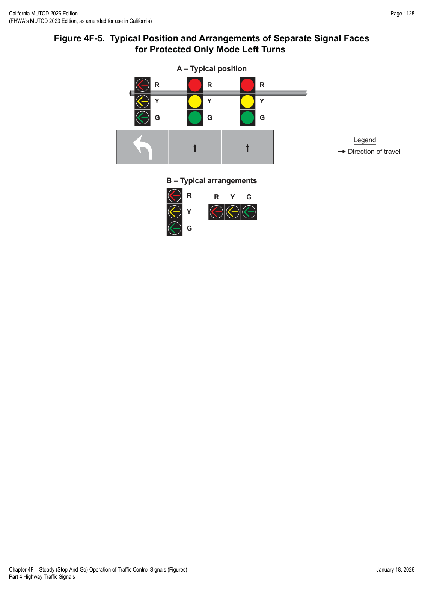
4F.07Signal Indications for Protected/Permissive Mode Left-Turn Movements in a Shared Signal Face
- 01If a shared signal face is provided for a protected/permissive mode left turn, it shall meet the following requirements (see Figure 4F-6): A. it shall be capable of displaying steady CIRCULAR RED, steady CIRCULAR YELLOW, CIRCULAR GREEN, steady left-turn YELLOW ARROW, and left-turn GREEN ARROW — only one of the three circular indications and only one of the two arrow indications displayed at any given time; if the left-turn GREEN ARROW and the CIRCULAR GREEN for the adjacent through movement are always terminated together, the steady left-turn YELLOW ARROW shall not be required; B. during the protected left-turn movement, the shared signal face shall simultaneously display a left-turn GREEN ARROW and a circular signal indication the same color as the adjacent through lane's signal indication; C. a steady left-turn YELLOW ARROW shall be displayed following the left-turn GREEN ARROW, unless the left-turn GREEN ARROW and the adjacent CIRCULAR GREEN(s) are being terminated together — in which case the required display shall be either CIRCULAR YELLOW alone or the simultaneous display of CIRCULAR YELLOW and left-turn YELLOW ARROW; D. during the permissive left-turn movement, the shared signal face shall display only a CIRCULAR GREEN; E. a protected/permissive shared signal face, regardless of position or number of adjacent through signal faces, shall always simultaneously display the same color of circular indication as the adjacent through signal face(s); F. a supplementary sign shall not be required — if used, it shall be a LEFT TURN YIELD ON GREEN (symbolic circular green) (R10-12) sign (see Section 2B.59).
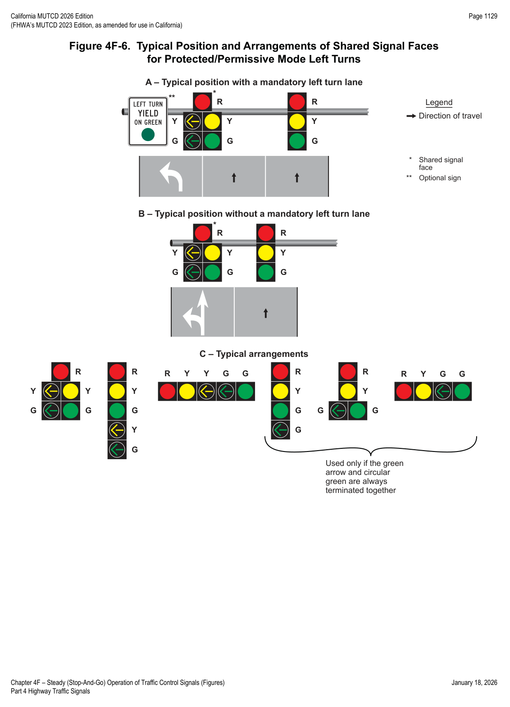
4F.08Signal Indications for Protected/Permissive Mode Left-Turn Movements in a Separate Signal Face
- 01A separate left-turn signal face shall not be used for an approach that does not include a mandatory left-turn lane.
- 02If a separate left-turn signal face is being operated in a protected/permissive left-turn mode, a CIRCULAR GREEN signal indication shall not be used in that face.
- 03If a separate left-turn signal face is being operated in a protected/permissive left-turn mode and a flashing left-turn YELLOW ARROW signal indication is provided, it shall meet the following requirements (see Figure 4F-7): A. it shall be capable of displaying steady left-turn RED ARROW, steady left-turn YELLOW ARROW, flashing left-turn YELLOW ARROW, and left-turn GREEN ARROW — only one of the four displayed at any given time; B. during the protected left-turn movement, a left-turn GREEN ARROW shall be displayed; C. a steady left-turn YELLOW ARROW shall be displayed following the left-turn GREEN ARROW (a steady left-turn RED ARROW may immediately follow the steady left-turn YELLOW ARROW to provide a red clearance interval); D. during the permissive left-turn movement, a flashing left-turn YELLOW ARROW shall be displayed; E. a steady left-turn YELLOW ARROW shall be displayed following the flashing left-turn YELLOW ARROW if the permissive left-turn movement is being terminated and the face will subsequently display a steady left-turn RED ARROW; F. it shall be permitted to display a flashing left-turn YELLOW ARROW for a permissive left-turn movement while the adjacent through movement displays steady CIRCULAR RED and the opposing left-turn signal faces display left-turn GREEN ARROW for a protected left-turn movement; G. when a permissive left-turn movement is changing to a protected left-turn movement, a left-turn GREEN ARROW shall be displayed immediately upon termination of the flashing left-turn YELLOW ARROW — a steady left-turn YELLOW ARROW shall not be displayed between the flashing left-turn YELLOW ARROW and the steady left-turn GREEN ARROW; H. the display shall be either (1) a four-section signal face with the steady left-turn YELLOW ARROW displayed in a different section than the flashing left-turn YELLOW ARROW, or (2) a three-section signal face with the steady and flashing left-turn YELLOW ARROW displayed in the same bimodal signal section; I. during steady mode operation where a four-section signal face is used, the signal section that displays the steady left-turn YELLOW ARROW during change intervals shall not be used to display the flashing left-turn YELLOW ARROW for permissive left turns; J. during flashing mode operation (see Chapter 4G) where a four-section signal face is used, the flashing left-turn YELLOW ARROW shall be displayed only from the signal section that displays a steady left-turn YELLOW ARROW during steady mode operation.
- 04A bimodal signal section (capable of displaying a GREEN ARROW for the protected left-turn movement and a flashing YELLOW ARROW for the permissive left-turn movement), along with a steady left-turn YELLOW ARROW and a steady left-turn RED ARROW, may be used for a separate left-turn signal face and may be considered a four-section signal face compliant with Item H.1 of Paragraph 3.
- 05A separate left-turn signal face with a flashing left-turn RED ARROW signal indication during the permissive left-turn movement may be used for unusual geometric conditions, such as wide medians with offset left-turn lanes, but only when an engineering study determines that each and every vehicle must successively come to a full stop before making a permissive left turn.
- 06If a separate left-turn signal face is being operated in a protected/permissive left-turn mode and a flashing left-turn RED ARROW signal indication is provided, it shall meet the following requirements (see Figure 4F-3): A. it shall be capable of displaying steady or flashing left-turn RED ARROW, steady left-turn YELLOW ARROW, and left-turn GREEN ARROW — only one displayed at any given time; B. during the protected left-turn movement, a left-turn GREEN ARROW shall be displayed; C. a steady left-turn YELLOW ARROW shall be displayed following the left-turn GREEN ARROW; D. during the permissive left-turn movement, a flashing left-turn RED ARROW shall be displayed; E. a steady left-turn YELLOW ARROW shall be displayed following the flashing left-turn RED ARROW if the permissive left-turn movement is being terminated and the face will subsequently display a steady left-turn RED indication; F. when a permissive left-turn movement is changing to a protected left-turn movement, a left-turn GREEN ARROW shall be displayed immediately upon termination of the flashing left-turn RED ARROW — a steady left-turn YELLOW ARROW shall not be displayed between them; G. it shall be permitted to display a flashing left-turn RED ARROW for a permissive left-turn movement while the adjacent through movement displays steady CIRCULAR RED and the opposing left-turn signal faces display left-turn GREEN ARROW for a protected left-turn movement; H. a supplementary sign shall not be required — if used, it shall be a LEFT TURN YIELD ON FLASHING RED ARROW AFTER STOP (R10-27) sign (see Section 2B.59).
- 07The requirements of Item A in Paragraph 6 may be met by a vertically-arranged signal face with a horizontal cluster of two left-turn RED ARROW signal indications, the left-most displaying a steady indication and the right-most a flashing indication (see Figure 4F-3).
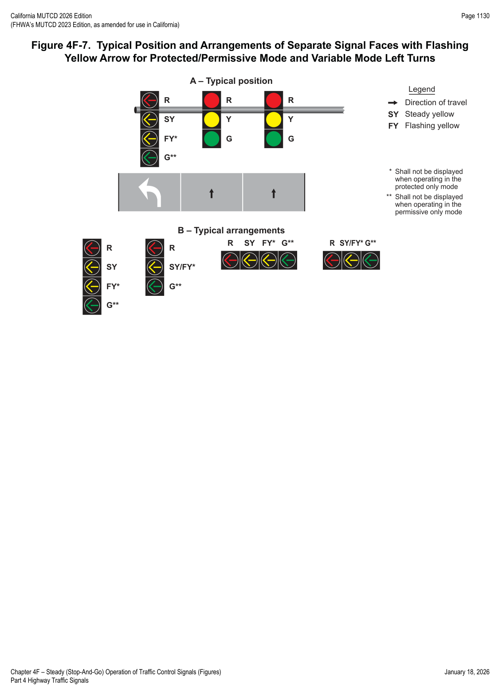
In practice: Sections 4F.03 through 4F.08 mirror each other exactly for the four left-turn modes (permissive only, protected only, protected/permissive) across shared vs. separate signal faces — once the pattern of one pair is understood, the remaining pairs (and their right-turn mirror images in 4F.10–4F.15) follow the same logic with left/right swapped.
4F.09Signal Indications for Right-Turn Movements — General
- 01In Sections 4F.10 through 4F.15, provisions applicable to right-turn movements and right-turn lanes are also applicable to signal indications for U-turns to the right that are provided at locations where right turns are prohibited or not geometrically possible.
- 02Right-turning traffic is controlled by one of four modes: A. Permissive Only Mode — turns made on a CIRCULAR GREEN, a flashing right-turn YELLOW ARROW, or a flashing right-turn RED ARROW after yielding to pedestrians, if any; B. Protected Only Mode — turns made only when a right-turn GREEN ARROW is displayed; C. Protected/Permissive Mode — both modes occur on an approach during the same cycle; D. Variable Right-Turn Mode — the operating mode changes among protected only, protected/permissive, and/or permissive only during different periods of the day or as traffic conditions change.
- 03During a permissive right-turn movement, any signal face(s) that exclusively control U-turn traffic conflicting with the permissive right-turn movement (see Item H.1, Paragraph 3, Section 4F.01) shall simultaneously display steady U-turn RED ARROW signal indications. If pedestrians crossing the lane(s) used by the permissive right-turn movement to depart the intersection are controlled by pedestrian signal heads, those heads' displays shall not be limited to any particular display during the permissive right-turn movement.
- 04During a protected right-turn movement, a GREEN ARROW or YELLOW ARROW signal indication shall not simultaneously be displayed to left-turning traffic on the opposing approach, except where a separate departure lane is available for each left-turn and right-turn lane with moving traffic and markings/channelization clearly indicate which departure lane to use (see Item H.1, Paragraph 3, Section 4F.01). Signal faces, if any, that exclusively control U-turn traffic conflicting with the protected right-turn movement shall simultaneously display steady RED ARROW signal indications. If pedestrians crossing the lane(s) used by the protected right-turn movement to depart the intersection are controlled by pedestrian signal heads, those heads shall display a steady UPRAISED HAND (DON'T WALK) signal indication during the protected right-turn movement.
- 05If a combined right-turn/through lane exists on an approach, a right-turn GREEN ARROW, right-turn YELLOW ARROW, or flashing right-turn RED ARROW signal indication shall not be displayed to the approach simultaneously with a CIRCULAR RED for the through movement, and a right-turn RED ARROW signal indication shall not be displayed simultaneously with a CIRCULAR GREEN or CIRCULAR YELLOW for the through movement.
- 06If the operating mode changes among protected only, protected/permissive, and/or permissive only during different periods of the day or as traffic conditions change, the requirements in Sections 4F.10 through 4F.15 appropriate to that mode shall be met, subject to: A. the CIRCULAR GREEN and CIRCULAR YELLOW signal indications shall not be displayed when operating in the protected only mode; B. the right-turn GREEN ARROW and right-turn YELLOW ARROW signal indications shall not be displayed when operating in the permissive only mode.
- 07When variable right-turn mode phasing is used for an approach with a combined right-turn/straight-through lane and a flashing yellow arrow is used as the permissive turn display, a five-section shared right-turn signal face containing both circular and arrow indications may be used in combination with one or more separate right-turn signal faces for the mandatory right-turn lane(s), if any, on the same approach. The steady and flashing right-turn YELLOW ARROW may be displayed in the same section of the five-section shared right-turn signal face.
- 08Additional static signs or changeable message signs may be used to meet the requirements for the variable right-turn mode or to inform drivers that right-turn green arrows will not be available during certain times of the day.
- 09Sections 4F.10 through 4F.15 describe two types of signal faces for controlling right-turn movements: A. Shared signal face — controls both the right-turn movement and the adjacent (usually through) movement and can serve as a required primary signal face for the adjacent movement; always displays the same color of circular indication as that adjacent signal face(s). B. Separate right-turn signal face — controls only the right-turn movement and cannot serve as a required primary signal face for the adjacent movement because it displays indications applicable only to the right turn; if mounted overhead, positioned over the extension of the mandatory right-turn lane; a flashing right-turn YELLOW ARROW or flashing right-turn RED ARROW is used to control permissive right-turn movements.
- 10Section 4D.07 contains provisions regarding the lateral positioning of signal faces that control right-turn movements.
- 11It is not necessary that the same mode of right-turn operation or same type of right-turn signal face be used on every approach to a signalized location — selecting different modes and types for various approaches to the same location is acceptable.
- 12A signal face that is shared by left-turning and right-turning traffic may be provided for a combined left-turn/right-turn lane on an approach that has no through traffic (see Section 4F.16).
- 13A right-turn green arrow should be considered for use only when there is an exclusive right-turn lane, it is the only movement that traffic is permitted to make, or the right-turn volume exceeds 200 vehicles per hour.
4F.10Signal Indications for Permissive Only Mode Right-Turn Movements in a Shared Signal Face
- 01If a shared signal face is provided for a permissive only mode right turn, it shall meet the following requirements (see Figure 4F-8): A. it shall be capable of displaying steady CIRCULAR RED, steady CIRCULAR YELLOW, and CIRCULAR GREEN — only one displayed at any given time; B. during the permissive right-turn movement, a CIRCULAR GREEN shall be displayed; C. a permissive only shared signal face, regardless of position or number of adjacent through signal faces, shall always simultaneously display the same color of circular indication as the adjacent through signal face(s); D. if permissive only mode is not the only right-turn mode used for the approach, the signal face shall be the same shared signal face used for protected/permissive mode (see Section 4F.14), except the right-turn GREEN ARROW and right-turn YELLOW ARROW shall not be displayed when operating in the permissive only mode.
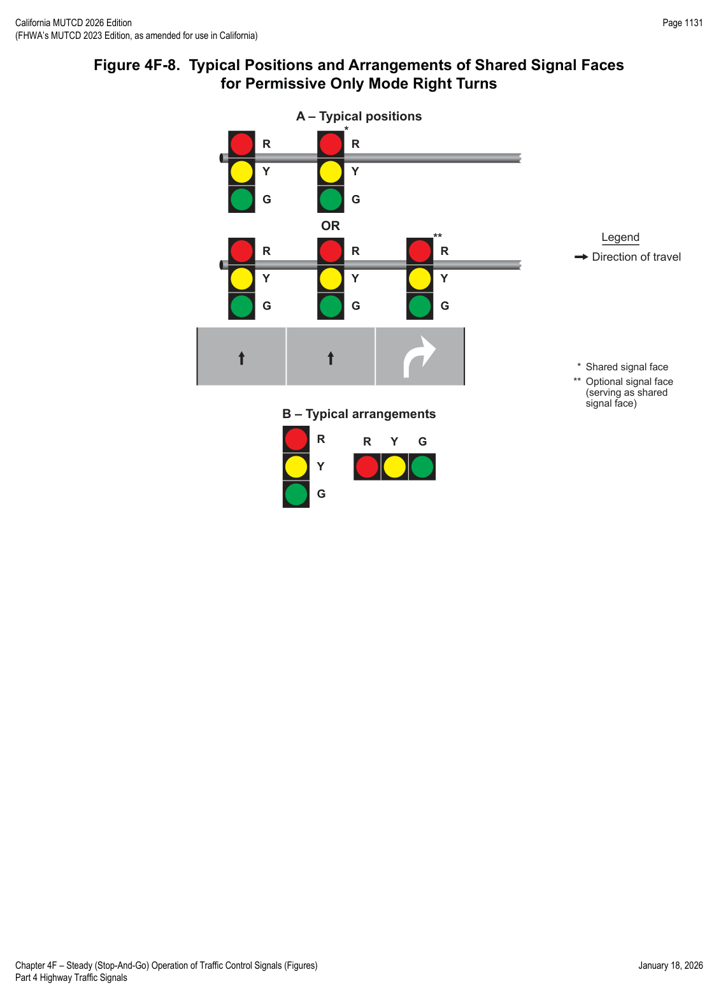
4F.11Signal Indications for Permissive Only Mode Right-Turn Movements in a Separate Signal Face
- 01A separate right-turn signal face shall not be used for an approach that does not include a mandatory right-turn lane.
- 02If a separate right-turn signal face is being operated in a permissive only right-turn mode, a CIRCULAR GREEN signal indication shall not be used in that face.
- 03If a separate right-turn signal face is being operated in a permissive only right-turn mode and a flashing right-turn YELLOW ARROW signal indication is provided, it shall meet the following requirements (see Figure 4F-9): A. it shall be capable of displaying one of the following sets — (1) steady right-turn RED ARROW, steady right-turn YELLOW ARROW, and flashing right-turn YELLOW ARROW (only one displayed at any given time), or (2) steady CIRCULAR RED, steady right-turn YELLOW ARROW, and flashing right-turn YELLOW ARROW (only one displayed at any given time) — if the CIRCULAR RED is sometimes displayed when the adjacent through lane(s) are not displaying CIRCULAR RED, a RIGHT TURN SIGNAL (R10-10R) sign (see Section 2B.59) shall be used unless the CIRCULAR RED in the separate right-turn signal face is shielded, hooded, louvered, positioned, or designed so it is not readily visible to drivers in the through lane(s); B. during the permissive right-turn movement, a flashing right-turn YELLOW ARROW shall be displayed; C. a steady right-turn YELLOW ARROW shall be displayed following the flashing right-turn YELLOW ARROW; D. when the separate right-turn signal face gives a message to stop and remain stopped, a steady right-turn RED ARROW shall be displayed if right turns on red are not intended to be permitted (except where a device permits a turn on steady RED ARROW), or a steady CIRCULAR RED shall be displayed if right turns on red are intended to be permitted (refer to CVC § 21453); E. it shall be permitted to display a flashing right-turn YELLOW ARROW for a permissive right-turn movement while the adjacent through movement displays steady CIRCULAR RED; F. during steady mode operation, the signal section that displays the steady right-turn YELLOW ARROW during change intervals shall not be used to display the flashing right-turn YELLOW ARROW for permissive right turns, unless a bimodal signal section capable of alternating between steady and flashing YELLOW ARROW is used during variable right-turn mode operation; G. during flashing mode operation (see Chapter 4G), the flashing right-turn YELLOW ARROW shall be displayed only from the signal section that displays a steady right-turn YELLOW ARROW during steady mode operation; H. if permissive only mode is not the only right-turn mode used for the approach, the signal face shall be the same separate right-turn signal face with a flashing YELLOW ARROW used for protected/permissive mode (see Section 4F.15), except the right-turn GREEN ARROW shall not be displayed when operating in the permissive only mode.
- 04When an engineering study determines that each and every vehicle must successively come to a full stop before making a permissive right turn, a separate right-turn signal face with a flashing right-turn RED ARROW signal indication during the permissive right-turn movement may be used.
- 05If a separate right-turn signal face is being operated in a permissive only right-turn mode and a flashing right-turn RED ARROW signal indication is provided, it shall meet the following requirements (see Figure 4F-10): A. it shall be capable of displaying one of the following sets — (1) steady or flashing right-turn RED ARROW, steady right-turn YELLOW ARROW, and right-turn GREEN ARROW (only one displayed at any given time; the GREEN ARROW is required to provide a three-section face but shall not be displayed during the permissive only mode), or (2) steady CIRCULAR RED on the left and steady right-turn RED ARROW on the right of the top position, steady right-turn YELLOW ARROW in the middle position, and right-turn GREEN ARROW in the bottom position (only one of the four displayed at any given time; the GREEN ARROW is required to provide three vertical positions but shall not be displayed during the permissive only mode) — if the CIRCULAR RED is sometimes displayed when the adjacent through lane(s) are not displaying CIRCULAR RED, a RIGHT TURN SIGNAL (R10-10R) sign (see Section 2B.59) shall be used unless the CIRCULAR RED is shielded, hooded, louvered, positioned, or designed so it is not readily visible to drivers in the through lane(s); B. during the permissive right-turn movement, a flashing right-turn RED ARROW shall be displayed, indicating that each and every vehicle must successively come to a full stop before making a permissive right turn; C. a steady right-turn YELLOW ARROW shall be displayed following the flashing right-turn RED ARROW; D. when the separate right-turn signal face gives a message to stop and remain stopped, a steady right-turn RED ARROW shall be displayed if right turns on red are not intended to be permitted, or a steady CIRCULAR RED shall be displayed if right turns on red are intended to be permitted (refer to CVC § 21453); E. the display of a flashing right-turn RED ARROW for a permissive right-turn movement while the adjacent through movement displays steady CIRCULAR RED and the opposing left-turn signal faces display left-turn GREEN ARROW for a protected left-turn movement shall be permitted; F. a supplementary sign shall not be required — if used, it shall be a RIGHT TURN YIELD ON FLASHING RED ARROW AFTER STOP (R10-27) sign (see Section 2B.59).
- 06The requirements of Item A.1 in Paragraph 5 may be met by a vertically-arranged signal face with a horizontal cluster of two right-turn RED ARROW signal indications, the left-most displaying a steady indication and the right-most a flashing indication (see Figure 4F-10).
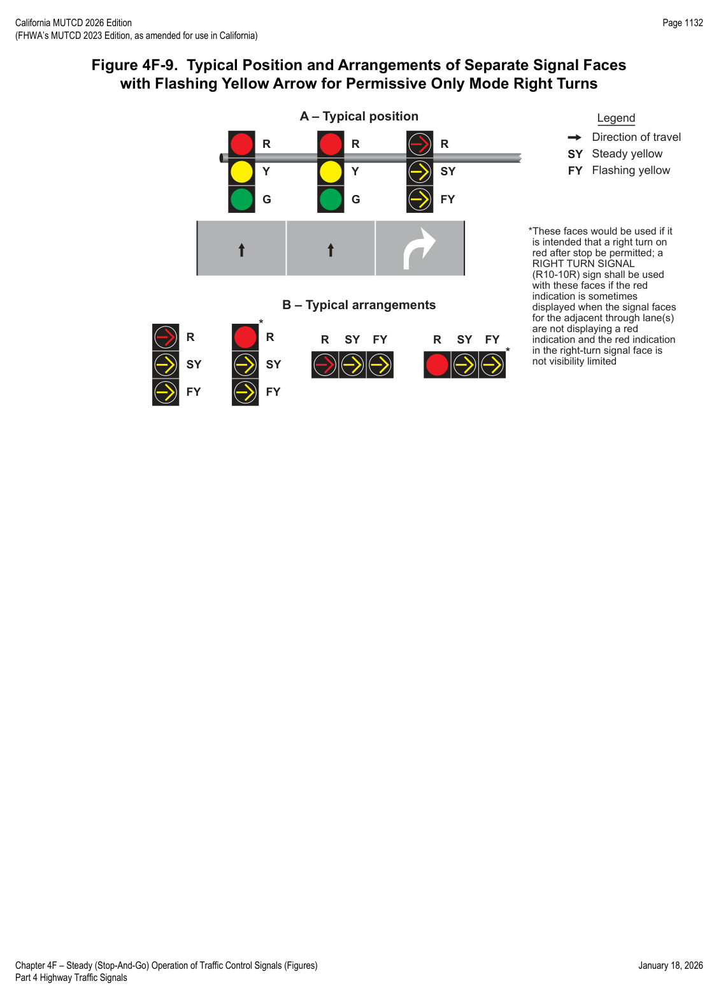
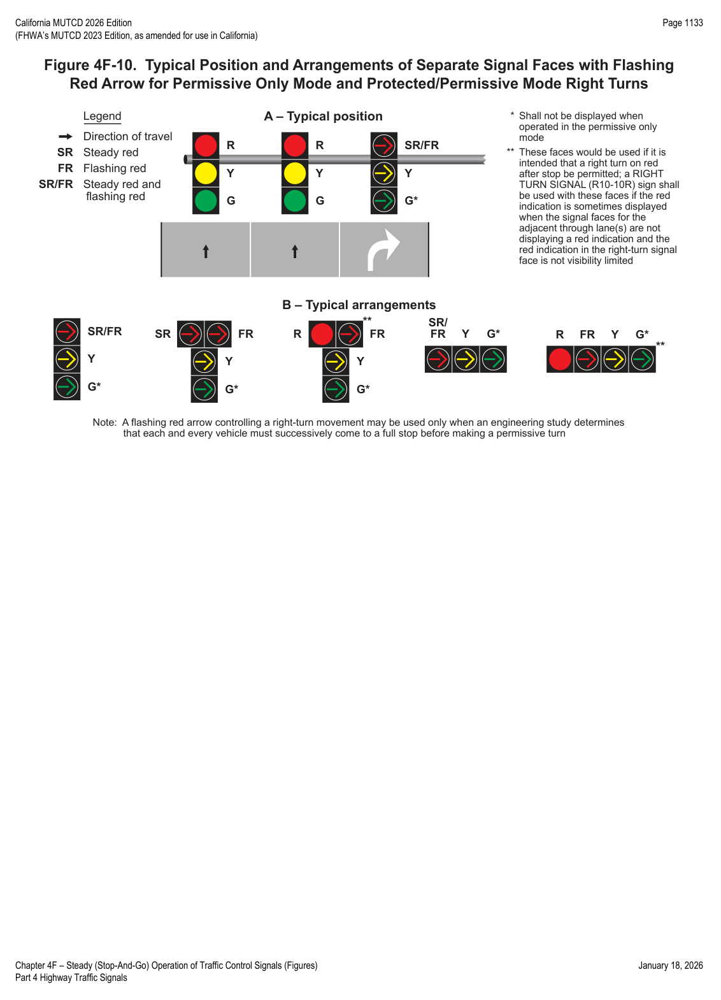
4F.12Signal Indications for Protected Only Mode Right-Turn Movements in a Shared Signal Face
- 01A shared signal face shall not be used for protected only mode right turns unless the CIRCULAR GREEN and right-turn GREEN ARROW signal indications always begin and terminate together. If a shared signal face is provided for a protected only right turn, it shall meet the following requirements (see Figure 4F-11): A. it shall be capable of displaying steady CIRCULAR RED, steady CIRCULAR YELLOW, CIRCULAR GREEN, and right-turn GREEN ARROW — only one of the three colors displayed at any given time; B. during the protected right-turn movement, the shared signal face shall simultaneously display both a CIRCULAR GREEN and a right-turn GREEN ARROW; C. the shared signal face shall always simultaneously display the same color of circular indication as the adjacent through signal face(s); D. if protected only mode is not the only right-turn mode used for the approach, the signal face shall be the same shared signal face used for protected/permissive mode (see Section 4F.15).
- 02A straight-through GREEN ARROW signal indication may be used instead of CIRCULAR GREEN in Items A and B of Paragraph 1 on an approach where a straight-through GREEN ARROW is also used instead of CIRCULAR GREEN in the other signal face(s) for through traffic.
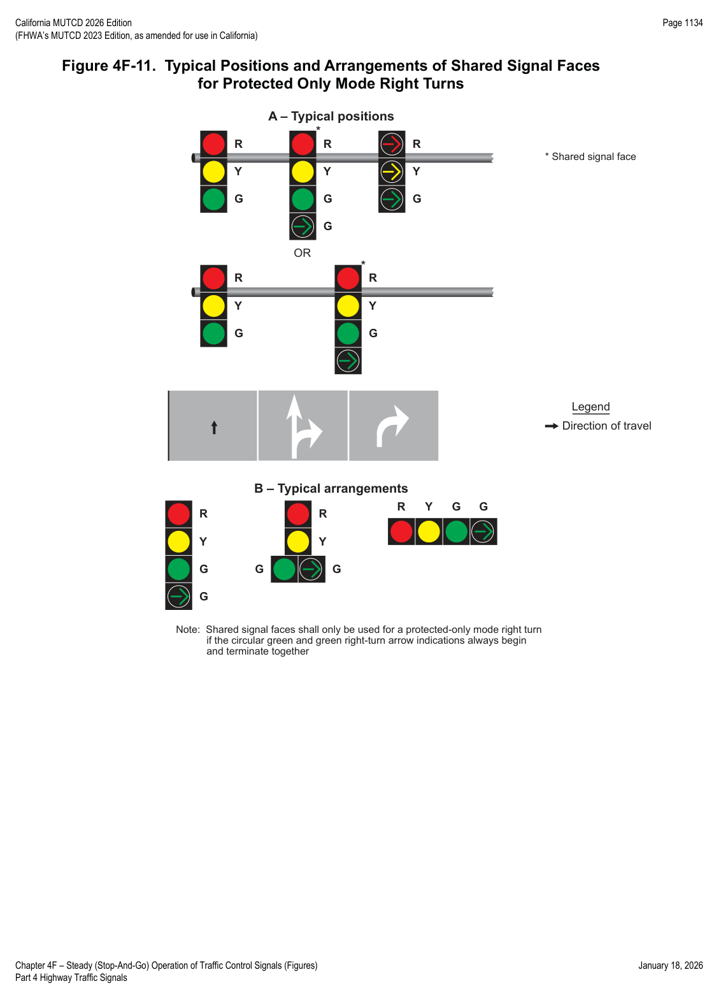
4F.13Signal Indications for Protected Only Mode Right-Turn Movements in a Separate Signal Face
- 01A separate right-turn signal face shall not be used for an approach that does not include a mandatory right-turn lane.
- 02If a separate right-turn signal face is provided for a protected only mode right turn, it shall meet the following requirements (see Figure 4F-12): A. it shall be capable of displaying one of the following sets — (1) steady right-turn RED ARROW, steady right-turn YELLOW ARROW, and right-turn GREEN ARROW (only one displayed at any given time), or (2) steady CIRCULAR RED, steady right-turn YELLOW ARROW, and right-turn GREEN ARROW (only one displayed at any given time) — if the CIRCULAR RED is sometimes displayed when the adjacent through lane(s) are not displaying CIRCULAR RED, a RIGHT TURN SIGNAL (R10-10R) sign (see Section 2B.59) shall be used unless the CIRCULAR RED is shielded, hooded, louvered, positioned, or designed so it is not readily visible to drivers in the through lane(s); B. during the protected right-turn movement, a right-turn GREEN ARROW shall be displayed; C. a steady right-turn YELLOW ARROW shall be displayed following the right-turn GREEN ARROW; D. when the separate signal face gives a message to stop and remain stopped, a steady right-turn RED ARROW shall be displayed if right turns on red are not intended to be permitted, or a steady CIRCULAR RED shall be displayed if right turns on red are intended to be permitted (refer to CVC § 21453); E. if protected only mode is not the only right-turn mode used for the approach, the signal face shall be the same separate right-turn signal face used for protected/permissive mode (see Section 4F.15), except a flashing right-turn YELLOW ARROW or flashing right-turn RED ARROW shall not be displayed when operating in the protected only mode.
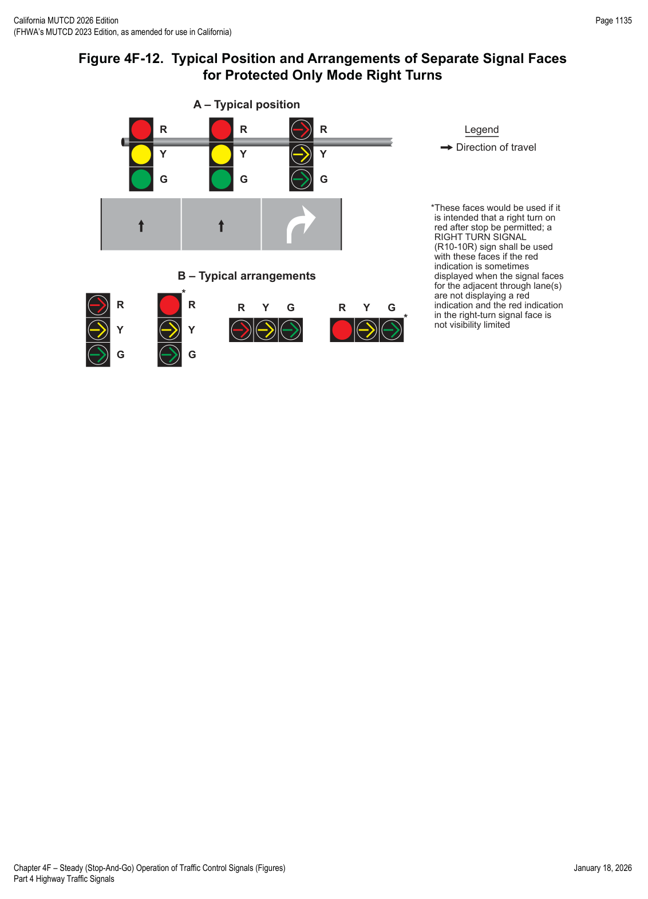
4F.14Signal Indications for Protected/Permissive Mode Right-Turn Movements in a Shared Signal Face
- 01If a shared signal face is provided for a protected/permissive mode right turn, it shall meet the following requirements (see Figure 4F-13): A. it shall be capable of displaying steady CIRCULAR RED, steady CIRCULAR YELLOW, CIRCULAR GREEN, steady right-turn YELLOW ARROW, and right-turn GREEN ARROW — only one of the three circular indications and only one of the two arrow indications displayed at any given time; if the right-turn GREEN ARROW and the adjacent CIRCULAR GREEN(s) are always terminated together, the steady right-turn YELLOW ARROW shall not be required; B. during the protected right-turn movement, the shared signal face shall simultaneously display a right-turn GREEN ARROW and a circular signal indication the same color as the adjacent through lane's signal indication; C. a steady right-turn YELLOW ARROW shall be displayed following the right-turn GREEN ARROW, unless the right-turn GREEN ARROW and the adjacent CIRCULAR GREEN(s) are being terminated together — in which case the required display shall be either CIRCULAR YELLOW alone or the simultaneous display of CIRCULAR YELLOW and right-turn YELLOW ARROW; D. during the permissive right-turn movement, the shared signal face shall display only a CIRCULAR GREEN; E. a protected/permissive shared signal face, regardless of position or number of adjacent through signal faces, shall always simultaneously display the same color of circular indication as the adjacent through signal face(s).
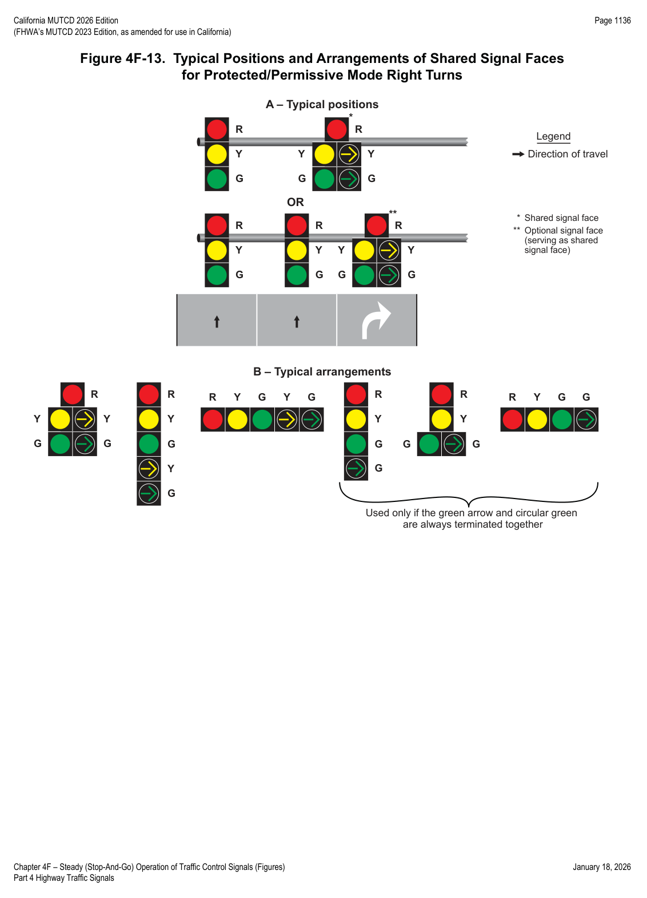
4F.15Signal Indications for Protected/Permissive Mode Right-Turn Movements in a Separate Signal Face
- 01A separate right-turn signal face shall not be used for an approach that does not include a mandatory right-turn lane.
- 02If a separate right-turn signal face is being operated in a protected/permissive right-turn mode, a CIRCULAR GREEN signal indication shall not be used in that face.
- 03If a separate right-turn signal face is being operated in a protected/permissive right-turn mode and a flashing right-turn YELLOW ARROW signal indication is provided, it shall meet the following requirements (see Figure 4F-14): A. it shall be capable of displaying one of the following sets — (1) steady right-turn RED ARROW, steady right-turn YELLOW ARROW, flashing right-turn YELLOW ARROW, and right-turn GREEN ARROW (only one of the four displayed at any given time), or (2) steady CIRCULAR RED, steady right-turn YELLOW ARROW, flashing right-turn YELLOW ARROW, and right-turn GREEN ARROW (only one of the four displayed at any given time) — if the CIRCULAR RED is sometimes displayed when the adjacent through lane(s) are not displaying CIRCULAR RED, a RIGHT TURN SIGNAL (R10-10R) sign (see Section 2B.59) shall be used unless the CIRCULAR RED is shielded, hooded, louvered, positioned, or designed so it is not readily visible to drivers in the through lane(s); B. during the protected right-turn movement, a right-turn GREEN ARROW shall be displayed; C. a steady right-turn YELLOW ARROW shall be displayed following the right-turn GREEN ARROW (a steady right-turn RED ARROW may immediately follow to provide a red clearance interval); D. during the permissive right-turn movement, a flashing right-turn YELLOW ARROW shall be displayed; E. a steady right-turn YELLOW ARROW shall be displayed following the flashing right-turn YELLOW ARROW if the permissive right-turn movement is being terminated and the face will subsequently display a steady red indication; F. when a permissive right-turn movement is changing to a protected right-turn movement — (1) if a permissive left-turn movement from the opposing approach is being terminated simultaneously, a steady right-turn YELLOW ARROW shall be displayed following the flashing right-turn YELLOW ARROW (a steady right-turn RED ARROW may immediately follow to provide a red clearance interval); (2) if no such simultaneous opposing permissive left-turn termination is present, a right-turn GREEN ARROW shall be displayed immediately upon termination of the flashing right-turn YELLOW ARROW, with no steady right-turn YELLOW ARROW displayed between them; G. when the separate right-turn signal face gives a message to stop and remain stopped, a steady right-turn RED ARROW shall be displayed if right turns on red are not intended to be permitted, or a steady CIRCULAR RED shall be displayed if right turns on red are intended to be permitted (refer to CVC § 21453); H. it shall be permitted to display a flashing right-turn YELLOW ARROW for a permissive right-turn movement while the adjacent through movement displays steady CIRCULAR RED; I. the display shall be either (1) a four-section signal face with the steady right-turn YELLOW ARROW displayed in a different section than the flashing right-turn YELLOW ARROW, or (2) a three-section signal face with the steady and flashing right-turn YELLOW ARROW displayed in the same bimodal signal section; J. during steady mode operation where a four-section signal face is used, the signal section that displays the steady right-turn YELLOW ARROW during change intervals shall not be used to display the flashing right-turn YELLOW ARROW for permissive right turns; K. during flashing mode operation (see Chapter 4G) where a four-section signal face is used, the flashing right-turn YELLOW ARROW shall be displayed only from the signal section that displays a steady right-turn YELLOW ARROW during steady mode operation.
- 04A bimodal signal section (capable of displaying a GREEN ARROW for the protected right-turn movement and a flashing YELLOW ARROW for the permissive right-turn movement), along with a steady right-turn YELLOW ARROW and a steady right-turn RED ARROW, may be used for a separate right-turn signal face and may be considered a four-section signal face compliant with Item I.1 of Paragraph 3.
- 05When an engineering study determines that each and every vehicle must successively come to a full stop before making a permissive right turn, a separate signal face with a flashing right-turn RED ARROW signal indication during the permissive right-turn movement may be used.
- 06If a separate right-turn signal face is being operated in a protected/permissive right-turn mode and a flashing right-turn RED ARROW signal indication is provided, it shall meet the following requirements (see Figure 4F-10): A. it shall be capable of displaying one of the following sets — (1) steady or flashing right-turn RED ARROW, steady right-turn YELLOW ARROW, and right-turn GREEN ARROW (only one displayed at any given time), or (2) steady CIRCULAR RED on the left and steady or flashing right-turn RED ARROW on the right of the top position, steady right-turn YELLOW ARROW in the middle position, and right-turn GREEN ARROW in the bottom position (only one of the four displayed at any given time) — if the CIRCULAR RED is sometimes displayed when the adjacent through lane(s) are not displaying CIRCULAR RED, a RIGHT TURN SIGNAL (R10-10R) sign (see Section 2B.59) shall be used unless the CIRCULAR RED is shielded, hooded, louvered, positioned, or designed so it is not readily visible to drivers in the through lane(s); B. during the protected right-turn movement, a right-turn GREEN ARROW shall be displayed; C. a steady right-turn YELLOW ARROW shall be displayed following the right-turn GREEN ARROW; D. during the permissive right-turn movement, the separate right-turn signal face shall display a flashing right-turn RED ARROW; E. a steady right-turn YELLOW ARROW shall be displayed following the flashing right-turn RED ARROW if the permissive right-turn movement is being terminated and the face will subsequently display a steady red indication; F. when a permissive right-turn movement is changing to a protected right-turn movement, a right-turn GREEN ARROW shall be displayed immediately upon termination of the flashing right-turn RED ARROW, with no steady right-turn YELLOW ARROW displayed between them; G. when the separate right-turn signal face gives a message to stop and remain stopped, a steady right-turn RED ARROW shall be displayed if right turns on red are not intended to be permitted, or a steady CIRCULAR RED shall be displayed if right turns on red are intended to be permitted (refer to CVC § 21453); H. it shall be permitted to display a flashing right-turn RED ARROW for a permissive right-turn movement while the adjacent through movement displays steady CIRCULAR RED and the opposing left-turn signal faces display left-turn GREEN ARROW for a protected left-turn movement; I. a supplementary sign shall not be required — if used, it shall be a RIGHT TURN YIELD ON FLASHING RED ARROW AFTER STOP (R10-27) sign (see Section 2B.59).
- 07The requirements of Item A.1 in Paragraph 6 may be met by a vertically-arranged signal face with a horizontal cluster of two right-turn RED ARROW signal indications, the left-most displaying a steady indication and the right-most a flashing indication (see Figure 4F-10).
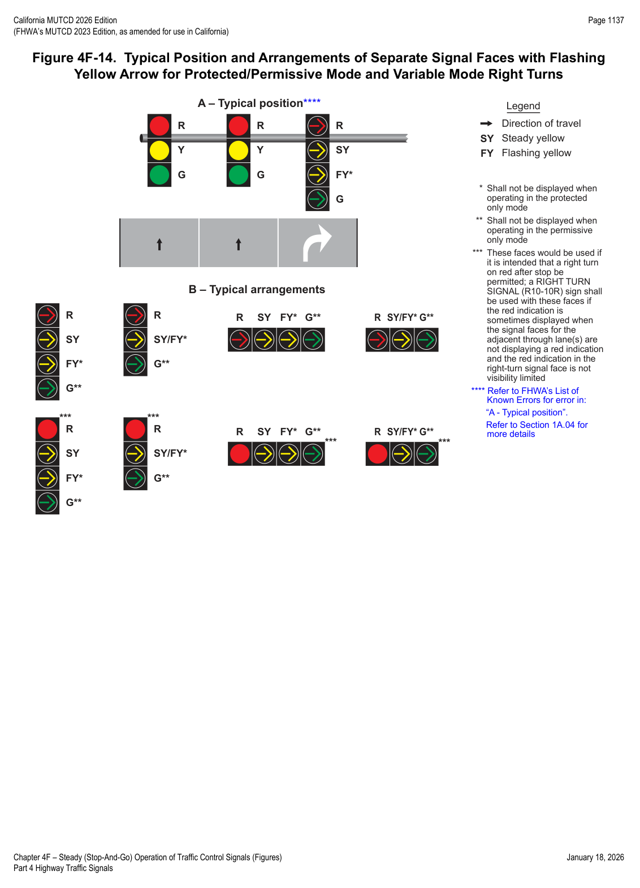
4F.16Signal Indications for Approaches with No Through Movement
- 01The provisions of this Section apply only to approaches where no through movement exists, such as the stem of a T-intersection or where the opposite approach is a one-way roadway in the opposing direction.
- 02Except for single-lane approaches, a minimum of two primary signal faces shall be provided for the signalized turning movement that is considered the major movement from the approach (see Section 4D.05).
- 03The required two primary signal faces and any supplemental primary signal faces may continuously display a steady CIRCULAR RED signal indication while steady or flashing YELLOW and steady GREEN ARROW signal indications are displayed during times when the traffic control signal is operated in the steady (stop-and-go) mode. The continuous display of steady CIRCULAR RED is intended to reinforce that there is no through movement for safety-critical locations.
- 04CIRCULAR GREEN and CIRCULAR YELLOW signal indications shall not be displayed to an approach with no through movement if: A. the posted or statutory speed limit on the approach is 35 mph or higher; B. the one-way roadway that opposes the approach is an exit ramp from a freeway or expressway; or C. the one-way roadway that opposes the approach has a posted or statutory speed limit of 35 mph or higher.
- 05A lane from which left-turn and right-turn movements can both be made is sometimes provided on an approach with no through movement, either as the only approach lane or as one of several approach lanes.
- 06If all of the lanes on the approach are designated as mandatory turn lanes and no lane is designated as a combined left-turn/right-turn lane, the left-turn and right-turn movements may start and terminate independently, and each may be operated in one or more of the modes described in Sections 4F.02 through 4F.15.
- 07When a combined left-turn/right-turn lane exists on an approach, the left-turn and right-turn movements shall start and terminate simultaneously, and the red signal indication used in each signal face on the approach shall be a CIRCULAR RED.
- 08This requirement for CIRCULAR RED signal indications in signal faces for approaches having a combined left-turn/right-turn lane is a specific exception to other provisions in this Chapter that would otherwise require RED ARROW signal indications.
- 09The signal faces provided for an approach with a combined left-turn/right-turn lane and no through movement shall be one of the following: A. Except as provided in Paragraph 6 of Section 4F.01 and Paragraph 4 of this Section, two or more signal faces, each capable of displaying CIRCULAR RED, CIRCULAR YELLOW, and CIRCULAR GREEN, shall be provided for the approach — permissible regardless of the number of mandatory left-turn and/or right-turn lanes in addition to the combined lane, and regardless of conflicting pedestrian or opposing vehicular movements; however, if there is an opposing approach and the signal phasing protects the left-turn movement from conflicts with opposing vehicular movements and any signalized pedestrian movements, a left-turn GREEN ARROW shall also be included in the left-most signal face and displayed simultaneously with CIRCULAR GREEN. B. If the approach has one or more mandatory turn lanes in addition to the combined lane and there is no conflict with a signalized vehicular or pedestrian movement, and GREEN ARROW signal indications are used in place of CIRCULAR GREEN, the signal faces shall be: (1) a signal face(s) capable of displaying CIRCULAR RED, YELLOW ARROW, and GREEN ARROW for the mandatory turn lane(s), arrows pointing in the direction of the turn; and (2) a shared left-turn/right-turn signal face capable of displaying CIRCULAR RED, left-turn YELLOW ARROW, left-turn GREEN ARROW, right-turn YELLOW ARROW, and right-turn GREEN ARROW, arranged per Section 4E.04 or 4E.05. C. If the approach has one or more mandatory turn lanes in addition to the combined lane and there is a conflict with a signalized vehicular or pedestrian movement, and flashing YELLOW ARROW signal indications are used in place of CIRCULAR GREEN, the signal faces shall be as described in Items B.1 and B.2, except flashing YELLOW ARROW signal indications shall be used in place of GREEN ARROW for the turning movement(s) that conflicts with the signalized vehicular or pedestrian movement.
- 10Figure 4F-15 illustrates application of these Standards on approaches with only a combined left-turn/right-turn lane, and on approaches with one or more mandatory turn lanes in addition to the combined left-turn/right-turn lane.
- 11If the lane-use regulations on an approach are variable such that at certain times all lanes are designated as mandatory turn lanes with no combined left-turn/right-turn lane: A. during those times, the left-turn and right-turn movements may start and terminate independently and be operated in one or more of the modes in Sections 4F.02 through 4F.15; and B. if a protected/permissive mode is used, the operation of the shared left-turn/right-turn signal face in Paragraph 9 may be modified to display the steady and flashing left-turn (right-turn) YELLOW ARROW in the same section, in order to not exceed the maximum of five sections per signal face provided in Section 4E.03.
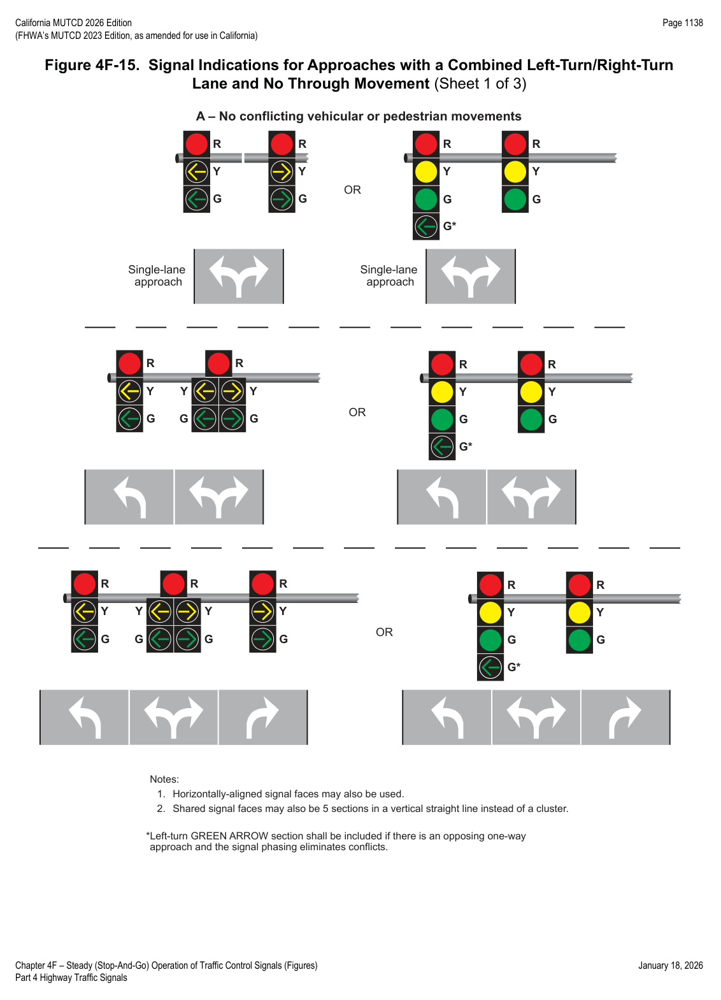
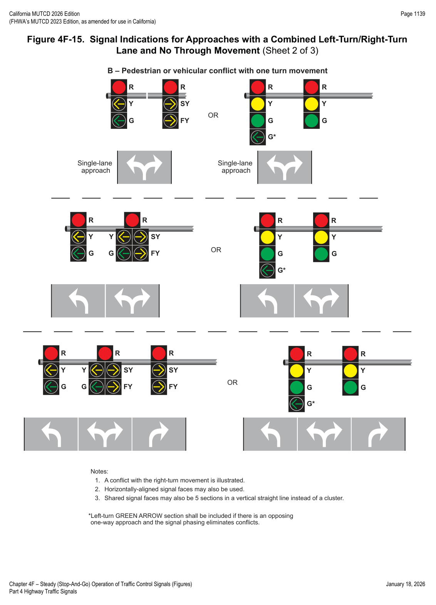
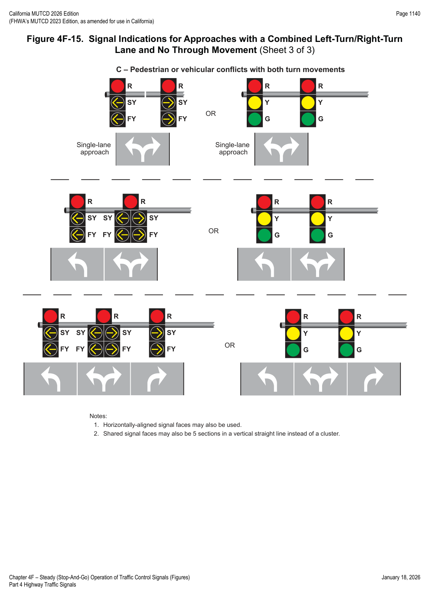
4F.17Yellow Change and Red Clearance Intervals
- 01The exclusive function of the yellow change interval is to warn traffic approaching a signalized location that their permission to proceed is being terminated, after which they will be directed to stop — or, for a protected/permissive turning movement, that their protected movement is being terminated after which they will need to perform their turn in a permissive manner.
- 02A steady yellow signal indication shall be displayed following every CIRCULAR GREEN or GREEN ARROW signal indication and following every flashing YELLOW ARROW or flashing RED ARROW signal indication displayed as part of a steady mode operation. This requirement does not apply when a CIRCULAR GREEN, flashing YELLOW ARROW, or flashing RED ARROW signal indication is followed immediately by a GREEN ARROW signal indication.
- 03The duration of the yellow change interval shall be determined using engineering practices.
- 04Section 4F.01 contains provisions regarding the display of steady CIRCULAR YELLOW signal indications to approaches from which drivers are allowed to make permissive left turns.
- 05When indicated by the application of engineering practices, the yellow change interval should be followed by a red clearance interval to provide additional time before conflicting traffic movements, including pedestrians, are released.
- 06When used, the duration of the red clearance interval shall be determined using engineering practices.
- 07The durations of yellow change intervals and red clearance intervals shall be consistent with the determined values within the technical capabilities of the controller unit.
- 08The duration of a yellow change interval shall not vary on a cycle-by-cycle basis within the same signal timing plan.
- 09Except as provided in Paragraph 10, the duration of a red clearance interval shall not be decreased or omitted on a cycle-by-cycle basis within the same signal timing plan.
- 10The duration of a red clearance interval may be extended from its predetermined value for a given cycle based upon the detection of a vehicle that is predicted to violate the red signal indication.
- 11When an actuated signal sequence includes a signal phase for permissive/protected (lagging) left-turn movements in both directions, the red clearance interval may be shown during cycles when the lagging left-turn phase is skipped, and may be omitted during cycles when the lagging left-turn phase is shown.
- 12The duration of a yellow change interval or a red clearance interval may be different in different signal timing plans for the same controller unit.
- 12aWhen used, red clearance intervals normally range from 0.1 to 2.0 seconds.
- 13A yellow change interval should have a minimum duration of 3 seconds and a maximum duration of 6 seconds. Longer intervals should be reserved for approaches with higher speeds. Except when clearing a one-lane, two-way facility (see Section 4O.02) or an exceptionally wide intersection, a red clearance interval should have a duration not exceeding 6 seconds.
- 13aPractitioners should exercise engineering judgment in determining the minimum yellow change interval, based on numerous factors including but not limited to field observation of traffic behavior, intersection geometrics, downhill grade, perception-reaction time of drivers in the area, and actually driving the protected left-turn or protected right-turn movements to assess the need for longer yellow change intervals. Particular attention should be paid to minimum yellow change interval timing where an exclusive turn lane exceeds 150 feet in length excluding the transition. Refer to Table 4D-101(CA).
- 13bThe purpose of the yellow signal indication is to warn traffic approaching a traffic signal that the related green movement is ending, or that a steady red indication will be exhibited immediately thereafter and traffic will be required to stop when the red signal is exhibited.
- 13cThe minimum yellow change interval for through traffic movement shall be determined by using the 85th percentile speed of free-flow traffic rounded up to the next 5 mph increment. Where the posted or prima facie speed limit is higher than the rounded value, use the posted or prima facie speed limit for determination of the minimum yellow change interval for the through traffic movement. Refer to Table 4D-101(CA), sub-heading "a".
- 13dIf the 85th percentile speed data is not available, the minimum yellow change interval for through traffic movements shall be determined by adding 7 mph to posted or prima facie speed limits of 30 mph or higher, and by adding 10 mph to posted or prima facie speed limits of 25 mph or less. Refer to Table 4D-101(CA), sub-heading "b".
- 13eThe minimum yellow change interval for the through movement and the protected left-turn or protected right-turn may be increased based on appropriate engineering judgment.
- 14Except for Warning Beacons mounted on advance warning signs on the approach to a signalized location (see Section 2C.35), signal displays intended to provide a "pre-yellow warning" interval, such as flashing green signal indications, vehicular countdown displays, or other similar displays, shall not be used at a signalized location.
- 15The use of signal displays (other than Warning Beacons mounted on advance warning signs) that convey a "pre-yellow warning" have been found by research to increase the frequency of crashes.
In practice: the minimum yellow (3 sec) and maximum red clearance (6 sec, except wide/one-lane-two-way crossings) guidance values in Paragraph 13, combined with California's speed-based minimum yellow formulas in Paragraphs 13c/13d, are the two calculations most frequently cross-checked during a signal timing plan review.
4F.18Preemption and Priority Control of Traffic Control Signals — General
- 01Traffic control signals may be designed and operated to respond to certain classes of approaching vehicles by altering the normal signal timing and phasing plan(s) during the approach and passage of those vehicles. The alternative plan(s) may be as simple as extending a currently displayed green interval, or as complex as replacing the entire set of signal phases and timing.
- 02Some types or classes of vehicles supersede others when a traffic control signal responds to more than one type or class. In general, a vehicle that is more difficult to control supersedes a vehicle that is easier to control.
- 03Preemption or priority control of traffic control signals may also be a means of indicating to specified classes of vehicles at certain non-intersection locations — such as approaches to one-lane bridges and tunnels, movable bridges, highway maintenance and construction activities, metered freeway entrance ramps, and transit operations — that they are permitted to proceed.
- 04When a traffic control signal returning to a steady mode from a dark mode (typically upon restoration from a power failure) receives a preemption or priority request, care should be exercised to minimize the possibility of vehicles or pedestrians being misdirected into a conflict with the vehicle making the request.
- 05During the change from a dark mode to a steady mode under a preemption or priority request, the display of signal indications that could misdirect road users may be prevented by one or more of the following methods: A. having the traffic control signal remain in the dark mode; B. having the traffic control signal remain in the flashing mode; C. altering the flashing mode; D. executing the normal start-up routine before responding; or E. responding directly to the initial or dwell period.
- 06Traffic control signals operating under preemption control or under priority control should be operated in a manner designed to keep traffic moving.
- 07Traffic control signals designed to respond under preemption or priority control to more than one type or class of vehicle should be designed to respond in the relative order of importance or difficulty in stopping the type or class of vehicle. The order of priority should be: train, boat, heavy vehicle (fire vehicle, emergency medical service), light vehicle (law enforcement), light rail transit vehicles, rubber-tired transit vehicles.
- 08If engineering judgment indicates that light rail transit signal indications would reduce road user confusion that might otherwise occur if standard traffic signal indications were used to control these movements, light rail transit signal indications complying with Section 8D.15 and as illustrated in Figure 8D-3 may be used for preemption or priority control of the following exclusive movements at signalized intersections: A. public transit buses in "queue jumper" lanes; and B. public transit buses in semi-exclusive or mixed-use alignments.
4F.19Preemption Control of Traffic Control Signals
- 01Preemption control (see definition in Section 1C.02) is typically given to trains, boats, emergency vehicles, and light rail transit.
- 02Examples of preemption control include: A. the prompt displaying of green signal indications at signalized locations ahead of fire vehicles, law enforcement vehicles, ambulances, and other official emergency vehicles; B. a special sequence of signal phases and timing to expedite and/or provide additional clearance time for vehicles to clear the tracks prior to the arrival of rail traffic; and C. a special sequence of signal phases to display a steady red indication to prohibit turning movements toward the tracks during the approach or passage of rail traffic.
- 03During the transition into preemption control, the yellow change interval, and any red clearance interval that follows, shall not be shortened or omitted.
- 04During the transition into preemption control: A. any pedestrian walk interval and/or pedestrian change interval may be shortened or omitted; B. the red clearance interval, if any, may be omitted so that the return to the previous green signal indication follows a steady yellow signal indication in the same signal face.
- 04aSection 8D.09 contains additional information regarding the pedestrian change interval for railroad preemption.
- 05During preemption control and during the transition out of preemption control: A. any yellow change interval, and any red clearance interval that follows, shall not be shortened or omitted; B. a signal indication sequence from a steady yellow signal indication to a green signal indication shall not be permitted.
- 06A distinctive indication may be provided at the intersection to inform law enforcement personnel escorting traffic (such as a parade or funeral procession) that the traffic control signal has changed to a red indication not because of normal cycling, but because it has been preempted by rail traffic approaching an adjacent grade crossing or by boat traffic approaching an adjacent movable bridge.
- 07A distinctive indication may be provided at the intersection to show that an emergency vehicle has been given control of the traffic control signal (see Section 11-106 of the "Uniform Vehicle Code"). To assist in understanding of the control of the traffic control signal, a common distinctive indication may be used where drivers from different agencies travel through the same intersection when responding to emergencies.
- 08Except for traffic control signals interconnected with light rail transit systems, traffic control signals with railroad preemption or coordinated with flashing-light signal systems should be provided with a back-up power supply.
- 09If a traffic control signal or hybrid beacon is installed near or within a grade crossing, or if a grade crossing with active traffic control devices is within or near a signalized highway intersection, Chapter 8D should be consulted.
- 10Section 8D.09 contains additional information regarding preemption for grade crossings. Section 8D.10 contains information regarding prohibiting movements toward the grade crossing during preemption. Sections 8D.11 and 8D.12 contain additional information regarding pre-signals and queue cutter signals, respectively, for grade crossings.
- 11Emergency Vehicle Preemption. Authorized emergency vehicles may preempt traffic signals to provide the right-of-way to the emergency vehicle as soon as practical. Preemption may be controlled by: 1. direct wire, modulated light, or radio from a remote location such as a fire house; 2. modulated light or radio from an emergency vehicle; or 3. network communication.
- 12Emergency vehicle equipment should be capable of encoding IDs.
- 13Emergency vehicle preemption should provide the following sequence of operation: 1. a yellow change interval and any required red clearance interval for any signal phase that is green or yellow when preemption is initiated and which will be red during the preemption interval.
- 14The length of the yellow change and red clearance intervals shall not be altered by preemption. Phases in the green interval when preemption is initiated, and which will be green during the preemption period, shall remain green. Any pedestrian walk interval in effect when preemption is initiated shall be immediately terminated (the normal pedestrian clearance interval may be shortened or omitted). An all-red intersection preemption display shall not be used. The traffic signal shall return to normal operation upon termination of the demand for preemption or the termination of the assured green interval.
- 15In the event of a demand for emergency vehicle preemption during the time the intersection is operating on railroad preemption, the railroad preemption sequence shall continue unaffected until completion. In the event of a demand for railroad preemption during emergency vehicle preemption operation, railroad preemption shall immediately assume control of the intersection.
- 16When control of emergency vehicle preemption is by means of a radio or modulated light source: 1. the transmitter shall be permanently mounted on the emergency vehicle or building and shall operate at a range sufficient to permit a normal yellow change interval and any required clearance intervals to take place prior to the arrival of the emergency vehicle (the normal pedestrian clearance interval may be abbreviated); 2. the preemption system may provide an indication (such as a special signal) to the driver of an emergency vehicle that preemption has been effected — if a special signal light is used, the color shall not be red, yellow, or green; 3. the system shall be designed to prevent simultaneous preemption by two or more emergency vehicles on separate approaches to the intersection.
- 17When performed by a local agency, the installation of emergency vehicle preemption equipment on state highways shall be covered by an Encroachment Permit issued by the Caltrans District Director.
- 18The permit shall state the applicable requirements listed above and the following: 1. the installation permit might be revoked or changed as deemed advisable or necessary by Caltrans; 2. the programming of the preemption equipment shall be as approved in advance by Caltrans and shall not be changed without written permission — the Permittee shall make any changes in programming requested by Caltrans; 3. the Permittee shall assume all liability for claims arising due to or because of the permit.
- 19Normally, emergency vehicle preemption equipment is installed, operated, and maintained at no cost to the State, except where the equipment is installed for use by vehicles of another State agency.
- 20The State shall maintain the preemption equipment at the traffic signal when the signal is maintained by the State. The costs of such maintenance shall be at 100% local agency expense.
4F.20Priority Control of Traffic Control Signals
- 01Priority control (see definition in Section 1C.02) is typically given to certain non-emergency vehicles, such as light-rail transit vehicles operating in a mixed-use alignment and buses.
- 02Examples of priority control include: A. displaying early or extended green signal indications at an intersection to assist public transit vehicles in improving operations; and B. special phasing to assist public transit vehicles in entering the travel stream ahead of other waiting traffic.
- 03During priority control and during the transition into or out of priority control: A. the shortening or omission of any yellow change interval, and of any red clearance interval that follows, shall not be permitted; B. the shortening of any pedestrian walk interval below the time described in Section 4I.06 shall not be permitted; C. the omission of a pedestrian walk interval and its associated change interval shall not be permitted unless the associated vehicular phase is also omitted or the pedestrian phase is exclusive; D. the shortening or omission of any pedestrian change interval shall not be permitted; E. a signal indication sequence from a steady yellow signal indication to a green signal indication shall not be permitted.
- 04Bus/Transit Vehicle Priority. The requirements for bus/transit vehicle priority — insofar as installation, encroachment permit, maintenance, and funding — are the same as stated above for emergency vehicle preemption on state highways.
- 05The operational requirements for bus/transit vehicle priority should be similar to those above for emergency vehicle preemption. Refer to CVC § 25352.
- 06Normally, bus/transit priority should not occur more than once every other signal cycle.
★ Key Takeaways — Chapter 4F
- Left-turn and right-turn movements are each controlled by one of four modes — permissive only, protected only, protected/permissive, or variable — and each mode can be implemented in either a shared signal face (same circular color as the through movement) or a separate signal face (arrow-only, using flashing yellow or flashing red arrows for the permissive component). Sections 4F.03–4F.08 (left) and 4F.10–4F.15 (right) are structural mirrors of each other.
- A fixed catalog of prohibited simultaneous-display combinations (Paragraphs 9–14 of Section 4F.01) prevents conflicting colors/arrows from ever appearing together on one face or across an approach, with narrow, clearly defined exceptions for right-turn overlap phases and pre-signal/queue-cutter signals.
- Approaches with a combined left-turn/right-turn lane and no through movement (Section 4F.16) are a special case requiring CIRCULAR RED (not RED ARROW) and simultaneous start/termination of both turning movements.
- Yellow change intervals (guidance minimum 3 sec, maximum 6 sec) and red clearance intervals (guidance maximum 6 sec, typically 0.1–2.0 sec) must never vary cycle-to-cycle within the same timing plan; California mandates an 85th-percentile-speed-based (or posted-speed-based) formula for the through-movement minimum yellow.
- Preemption (trains, emergency vehicles, light rail) and priority (transit) control both forbid shortening or omitting the yellow change and any following red clearance interval, and both forbid a yellow-to-green sequence — the difference is that pedestrian intervals may be shortened/omitted under preemption but priority control preserves them.